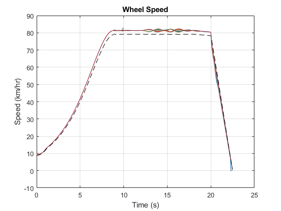
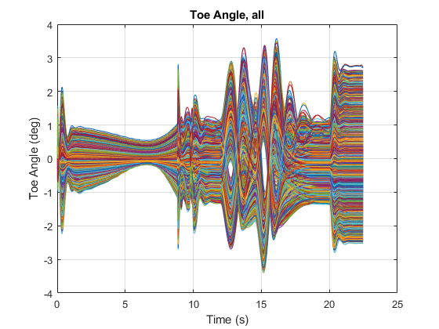

Generate Training Data by Running Design of Experiments
Contents
Overview
This example generates training data for a AI surrogate model. Design of Experiments is used to generate a distribution of parameters. The simulation model is tested with those parameters and performance metrics are calculated. The parameter sets and performance metrics will be used to train an AI surrogate model.
The code used to create this documentation is here: suspOpt_Training_Data.m
(return to Optimizing Vehicle Design Using AI and Simscape Overview)
Open Vehicle Model
The vehicle model is created using Simscape. The suspension is modeled using Simscape Multibody for rigid parts and joints. Simscape is used to model the springs, dampers, and driveline. A driver model attempts to follow a path provided for the test.
Perform Single Test
The vehicle model is set up to perform a test in three stages.
- Ride over a bump and measure ride comfort
- Complete a double-lane change maneuver (ISO 3888) and measure stability
- Brake to a stop and measure braking distance
For each stage, a performance metric is calculated. In the plots below you can see the changes in body pitch and roll angle as it passes over the bump and through the double-lane change. The wheel speeds show the steering and braking during the maneuver.
Load Table of Design Parameters
Adjusting the design requires selecting a set of design parameters to tune and setting ranges for those values. That set is defined in a table. For each parameter we specify:
- Label: A short character string to identify the parameter
- Parameter: Location in a MATLAB structure where the parameter is defined
- Index: Index of the value within the structure field
- Use: Indicator if the parameter should be tuned (true/false). Set to "true" until a senstivity analysis has been performed.
- Min: Minimum value for parameter range
- Max: Maximum value for parameter range
- Default: Default value for parameter
ans =
10×7 table
Label Parameter Index Use Min Max Default
_________________ ________________________________________________________________ _____ _____ _____ _____ _______
{'HP_A1_AR_Inbx'} {'Vehicle.Chassis.SuspA1.AntiRollBar.sInboard.Value' } 1 true -0.35 -0.25 -0.3
{'HP_A1_Ro_Inbz'} {'Vehicle.Chassis.SuspA1.Linkage.TrackRod.sInboard.Value' } 3 true 0.175 0.235 0.205
{'HP_A1_Ro_Outz'} {'Vehicle.Chassis.SuspA1.Linkage.TrackRod.sOutboard.Value' } 3 true 0.155 0.235 0.185
{'HP_A2_AR_Inbx'} {'Vehicle.Chassis.SuspA2.AntiRollBar.sInboard.Value' } 1 true 0.25 0.35 0.3
{'HP_A2_AR_Outx'} {'Vehicle.Chassis.SuspA2.AntiRollBar.sOutboard.Value' } 1 true 0 0.1 0.05
{'HP_A2_AR_Outy'} {'Vehicle.Chassis.SuspA2.AntiRollBar.sOutboard.Value' } 2 true 0.55 0.65 0.6
{'HP_A2_LA_Outy'} {'Vehicle.Chassis.SuspA2.Linkage.LowerWishbone.sOutboard.Value'} 2 true 0.656 0.756 0.706
{'HP_A2_LA_Outz'} {'Vehicle.Chassis.SuspA2.Linkage.LowerWishbone.sOutboard.Value'} 3 true 0.1 0.2 0.15
{'HP_A2_LA_inRz'} {'Vehicle.Chassis.SuspA2.Linkage.LowerWishbone.sInboardR.Value'} 3 true 0.1 0.2 0.15
{'HP_A2_UA_Outz'} {'Vehicle.Chassis.SuspA2.Linkage.UpperWishbone.sOutboard.Value'} 3 true 0.4 0.5 0.45
Specify Design Space Defined by Influential Parameters
Our training data needs to cover the space defined by the parameters identified by the sensitivity analysis. The entire list of design parameters is loaded and two sets of parameters for testing are created. One has all influential parameters set to their minimum value, one has all influential parameters set to their maximum value.
size(runTable)
ans =
2 94
Display only influential parameters
runTable(:,useIdx)
ans =
2×10 table
HP_A1_Ro_Inbz HP_A1_Ro_Outz HP_A1_AR_Inbx HP_A2_UA_Outz HP_A2_LA_inRz HP_A2_LA_Outy HP_A2_LA_Outz HP_A2_AR_Inbx HP_A2_AR_Outx HP_A2_AR_Outy
_____________ _____________ _____________ _____________ _____________ _____________ _____________ _____________ _____________ _____________
0.175 0.155 -0.35 0.4 0.1 0.656 0.1 0.25 0 0.55
0.235 0.235 -0.25 0.5 0.2 0.756 0.2 0.35 0.1 0.65
Generate Space-Filling DOE with Latin Hypercube Sampling
Parameter distributions can be generated using many methods. A common method is Latin Hypercube Sampling. We generate a large number of parameter sets that distribute the parameters evenly throughout the design space covered by the parameters in our design that we wish to tune. Each parameter value is varied within its individual range. The scatter plot below shows some of the samples for the list of influential parameters, a small subset of the parameter sets generated for our design of experiments.
Run Simulations Using Parallel Computing
Using the parsim() command, the suite of tests is executed in parallel on multiple workers. Using Fast Restart, the model is only compiled once per worker. Because we have defined the design parameters as run-time parameters, we can modify their values even within the compiled model. This dramatically shortens the time it takes to execute the sweep.
Progress is reported using the Simulation Manager. We can see if any warnings or errors have occurred during any of the tests and see how long each run has taken.
1002 parameter sets submitted, 826 obey parameter constraints. Starting parallel pool (parpool) using the 'Processes' profile ... Connected to parallel pool with 4 workers. 826 simulations completed in 2990.2406 seconds. Of 826 tests, 826 were valid. 
Extract Performance Metrics
For all runs, performance metrics are calculated.
- Ride Comfort: The magnitude of the vertical acceleration, roll acceleration, and pitch acceleration of the vehicle body is integrated during the period of time the vehicle passes over a bump. Larger values indicates worse ride comfort.
- Roll Stability: The L2 norm of the roll angle is calculated during the period of time the vehicle is in the double lane change maneuver. Larger values indicate worse vehicle stability.
- Vehicle Safety: The braking distance at the end of the test is measured. Longer braking distance indicates worse safety.
The plots below show a histogram of the performance metrics. The braking metric has a very narrow band, indicating the design space does not have much effect on the braking distance. Other design parameters or tests must be considered to impact that performance metric.